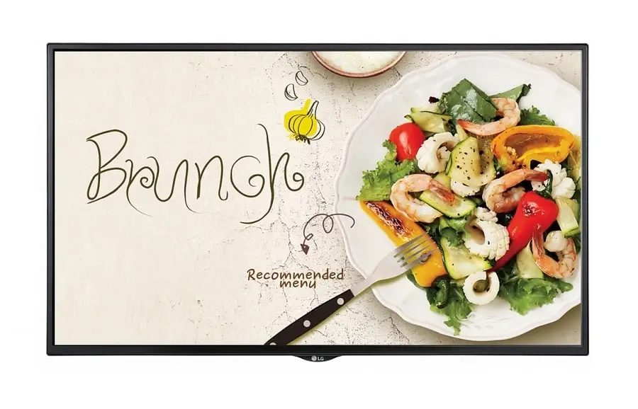

Стандартные дисплеи
Стандартные дисплеи LG – это готовая платформа для презентации любого визуального коммерческого контента: рекламы, цифровых витрин или вывесок. Встроенный медиаплеер позволяет начать мгновенно, без длительной настройки. В комплекте: яркое изображение благодаря матрице IPS, все необходимые порты ввода-вывода, и великолепные углы обзора.